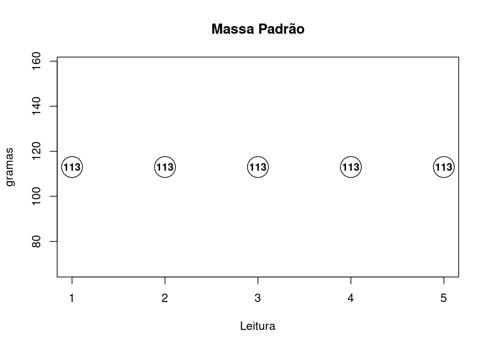
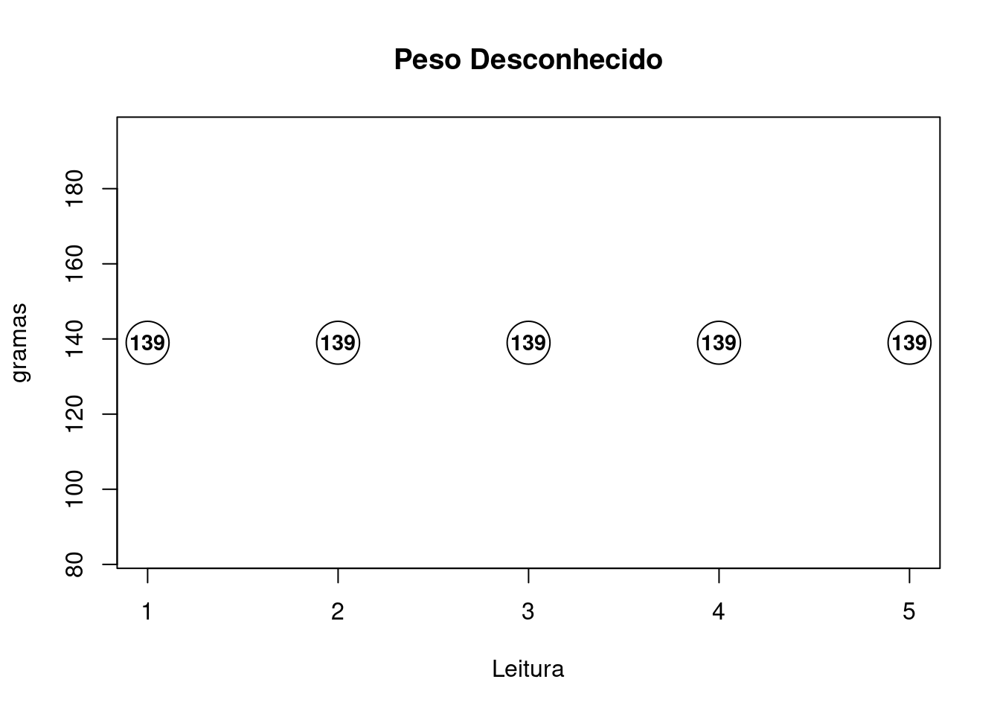
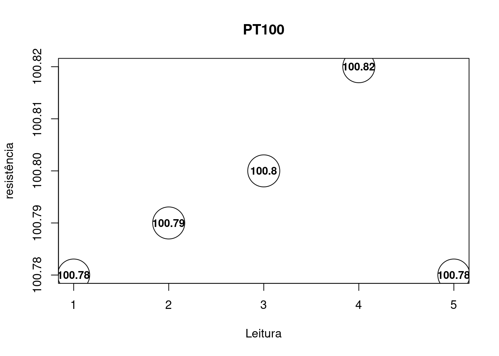

Utilize a massa padrão para calibrar uma balança digital. A massa padrão possui valor nominal de \(140g\), incerteza de \(0.2g\), correção de \(+1g\) e \(4\) graus de liberdade.
Modelo Matemático:
| Fontes | Tipos | FDP | Parâmetros das FDP |
|---|---|---|---|
| Repetitividade | A | Normal | Amostrado |
| Calibração da Massa Padrão | B | Normal | \(\pm 2g\), \(v=4\) |
| Resolução da Balança | B | Uniforme | \(1g\) |
| Correção da Massa Padrão | - | - | \(+1g\) |

| values | |
|---|---|
| \(U_{cal}\) | 0.6970304 |
| \(U_{rep}\) | 0.0000000 |
| \(U_{res}\) | 0.2886751 |
| \(U_c\) | 0.7544433 |
| \(\nu_{eff}\) | 5.0000000 |
| \(U_{exp}\) | 1.9982596 |
| \(C_c\) | 2.0000000 |
| 1 Algarismo Significativo | 2 Algarismos Significativos |
|---|---|
| Cb = ( 2 \(\pm\) 2 ) \(g\) com 95.45 % de confiança | Cb = ( 2.0 \(\pm\) 2.0 ) \(g\) com 95.45 % de confiança |
Uma vez calibrada a balança identifique a massa de um objeto. Sobre a balança conhecemos somente as informações de correção, incerteza e graus de liberdade resultantes do procedimento anterior.
Modelo Matemático:
| Fontes | Tipos | FDP | Parâmetros das FDP |
|---|---|---|---|
| Repetitividade | A | Normal | Amostrado |
| Calibração da Balança | B | Normal | ver Procedimento 1 |
| Resolução da Balança | B | Uniforme | \(1g\) |

| values | |
|---|---|
| \(U_{cal}\) | 0.7544433 |
| \(U_{rep}\) | 0.0000000 |
| \(U_{res}\) | 0.2886751 |
| \(U_c\) | 0.8077859 |
| \(\nu_{eff}\) | 6.5712591 |
| \(U_{exp}\) | 1.9891858 |
| \(\bar{M}+C_c\) | 141.0000000 |
| 1 Algarismo Significativo | 2 Algarismos Significativos |
|---|---|
| RM = ( 141 \(\pm\) 2 ) \(g\) com 95.45 % de confiança | RM = ( 141.0 \(\pm\) 2.0 ) \(g\) com 95.45 % de confiança |
Com o sensor PT100 em \(0^oC\) (forno calibrado) identifique a resistência do sensor levando em consideração as incertezas do calibrador CA71. Faça medições da resistência de modo que \(R=R_{PT100}-R_{FIOS}\).
Modelo Matemático:
\(U_{PT100}=U_{calibração}+U_{resolução}+U_{repetividade}+U_{temperatura}\)
\(U_{FIOS}=U_{calibração}+U_{resolução}+U_{repetividade}+U_{temperatura}\)
\(U = U_{PT100} + U_{FIOS}\)
| Fontes | Tipos | FDP | Parâmetros das FDP |
|---|---|---|---|
| Repetitividade \(R_{PT100}\) | A | Normal | Amostrado |
| Repetitividade \(R_{FIOS}\) | A | Normal | Amostrado |
| Calibração do CA71 | B | Normal | \(\pm (0.05\%+0.1\Omega)\) para \((23\pm5)^oC\) |
| Resolução do CA71 | B | Uniforme | \(0.01\Omega\) |
| Temperatura do CA71 | B | Normal | \(Calibração*(1/5)/^oC\) |
Outras informações:

| values | |
|---|---|
| \(U_{cal-PT100}\) | 0.0751985 |
| \(U_{cal-FIOS}\) | 0.0502160 |
| \(U_{rep-PT100}\) | 0.0074833 |
| \(U_{rep-FIOS}\) | 0.0229347 |
| \(U_{res}\) | 0.0028868 |
| \(U_{temp-PT100}\) | 0.0240635 |
| \(U_{temp-FIOS}\) | 0.0160691 |
| \(U_c\) | 0.0980428 |
| \(\nu_{eff}\) | 1320.0000000 |
| \(U_{exp}\) | 0.1962718 |
| 1 Algarismo Significativo | 2 Algarismos Significativos |
|---|---|
| RM = 99.9 \(\pm\) 0.2 \(^oC\) com 95.45 % de confiança | RM = 99.93 \(\pm\) 0.20 \(^oC\) com 95.45 % de confiança |
Calibre o ohmímetro utilizando como referência a década resistiva.
Modelo Matemático:
| Fontes | Tipos | FDP | Parâmetros das FDP |
|---|---|---|---|
| Repetitividade | A | Normal | Amostrado |
| Calibração da Década | B | Normal | \(\pm(0.01\%+2m\Omega)\) para \((23\pm2)^oC\) |
| Resolução da Década | B | Uniforme | \(0.001\Omega\) |
| Resolução do Multímetro | B | Uniforme | \(1\Omega\) (na escala de \(2k\Omega\)) |
Outras informações:
| Coeficiente de Temperatura | Passo de \(100\Omega\) | Passo de \(10\Omega\) | Passo de \(1\Omega\) | Passo de \(0.1\Omega\) |
|---|---|---|---|---|
| \(\alpha_{20}\) \(~\\~(\times10^{-6}/^oC)\) | \(-5~\\~+10\) | \(-5~\\~+20\) | \(+20~\\~+90\) | \(+90~\\~+900\) |
| \(\beta\) \(~\\~(\times10^{-6}/^oC^2)\) | \(-0.3~\\~-0.7\) | \(-0.3~\\~-0.7\) |
| Menor Resistência para \(23^oC\) | Maior Resistência para \(23^oC\) | Correção Resultante | Incerteza Resultante |
|---|---|---|---|
| 999.978696 \(\Omega\) | 1000.033587 \(\Omega\) | -0.00714149999998881 \(\Omega\) | \(\pm\) 0.0158456668130432 \(\Omega\) |
| values | |
|---|---|
| \(U_{cal}\) | 0.0510000 |
| \(U_{rep}\) | 0.0000000 |
| \(U_{res mult}\) | 0.2886751 |
| \(U_{res dec}\) | 0.0002887 |
| \(U_{temp}\) | 0.0158457 |
| \(U_c\) | 0.2935737 |
| \(\nu_{eff}\) | Inf |
| \(U_{exp}\) | 0.5871480 |
| \(C_c\) | -0.0071415 |
| 1 Algarismo Significativo | 2 Algarismos Significativos |
|---|---|
| RM = 0.0 \(\pm\) 0.6 \(\Omega\) com 95.45 % de confiança | RM = -0.01 \(\pm\) 0.59 \(\Omega\) com 95.45 % de confiança |
Utilizando o resultado do procedimento 4 identifique o valor de uma dada resistência.
Modelo Matemático:
| Fontes | Tipos | FDP | Parâmetros das FDP |
|---|---|---|---|
| Repetitividade | A | Normal | Amostrado |
| Calibração do Multímetro | B | Normal | ver Procedimento 4 |
| Resolução do Multímetro | B | Uniforme | \(1\Omega\) (na escala de \(2k\Omega\)) |
| values | |
|---|---|
| \(U_{cal}\) | 0.2935737 |
| \(U_{rep}\) | 1.1595018 |
| \(U_{res}\) | 0.2886751 |
| \(U_c\) | 1.2304321 |
| \(\nu_{eff}\) | 11.0000000 |
| \(U_{exp}\) | 2.7744596 |
| \(C_c\) | -0.0071415 |
| 1 Algarismo Significativo | 2 Algarismos Significativos |
|---|---|
| RM = 1000 \(\pm\) 3 \(\Omega\) com 95.45 % de confiança | RM = 1000.3 \(\pm\) 2.8 \(\Omega\) com 95.45 % de confiança |
Utilize uma régua para dimensionar \(D=D_{EXTERNO}-D_{INTERNO}\).
Modelo Matemático:
| Fontes | Tipos | FDP | Parâmetros das FDP |
|---|---|---|---|
| Repetitividade \(D_{EXTERNO}\) | A | Normal | Amostrado |
| Repetitividade \(D_{INTERNO}\) | A | Normal | Amostrado |
| Resolução Régua | B | Triangular | \(0.1cm\) superior a \(10cm\) (1/3) |
| Resolução Régua | B | Triangular | \(0.05cm\) até \(10cm\) (1/2) |
Outras informações:
| values | |
|---|---|
| \(U_{rep-EXT}\) | 0.0130384 |
| \(U_{rep-INT}\) | 0.0032863 |
| \(U_{res-EXT}\) | 0.0061237 |
| \(U_{res-INT}\) | 0.0051031 |
| \(U_c\) | 0.0156314 |
| \(\nu_{eff}\) | 8.0000000 |
| \(U_{exp}\) | 0.0369905 |
| 1 Algarismo Significativo | 2 Algarismos Significativos |
|---|---|
| RM = 14.25 \(\pm\) 0.04 \(^oC\) com 95.45 % de confiança | RM = 14.252 \(\pm\) 0.037 \(^oC\) com 95.45 % de confiança |
Copyright © 2019 Guilherme Kunz, Inc. All rights reserved.